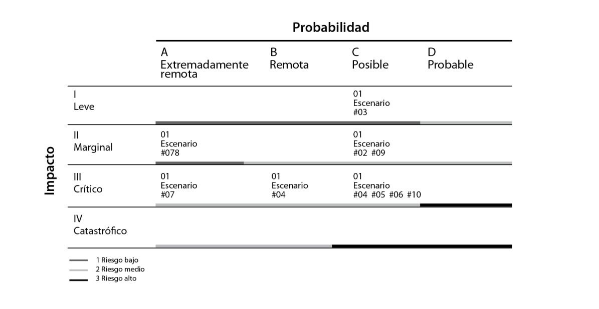
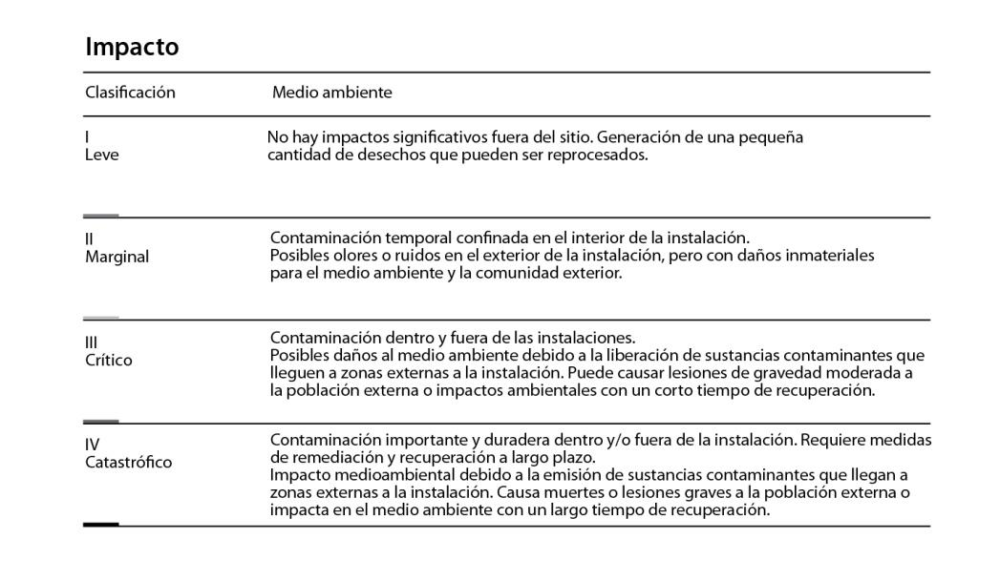
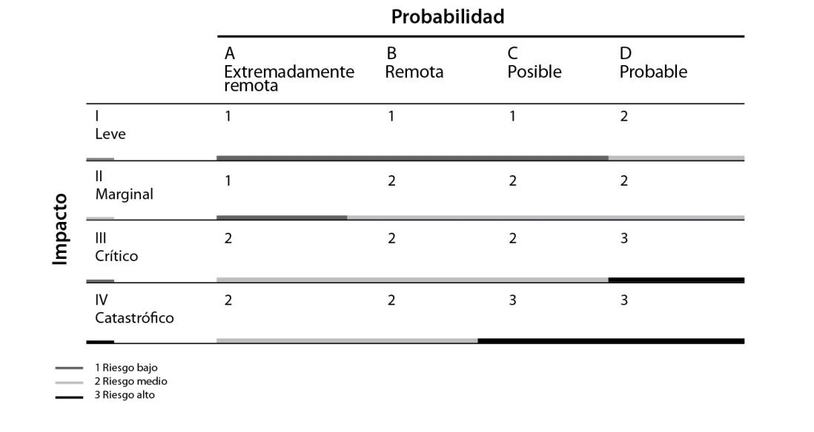
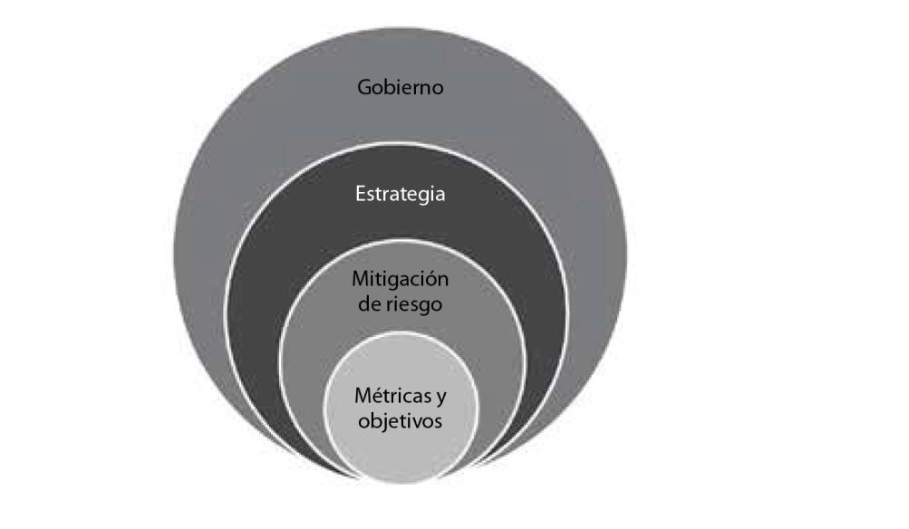

Experiencia Marsh McLennan:
Mapeo, mitigación
y planeamiento de
riesgos ambientales:
las empresas
pueden y deben estar listas
Introducción
Hoy el mundo se enfrenta a una serie de problemas urgentes: inestabilidad geopolítica, incertidumbre económica, desigualdades sociales y crisis climática; dentro de este contexto, seguimos viendo a los criterios ESG como centrales para todo el planeta. Se terminó el tiempo del voluntarismo, reportar con estos criterios es hoy un imperativo cada vez más reclamado por reguladores e inversionistas alrededor del mundo.
Por nuestra experiencia en criterios ESG, ayudamos a nuestros clientes en todo el mundo a identificar oportunidades y navegar por cuestiones apremiantes en el área de gestión de riesgos, estrategia y personas. Parte de nuestro trabajo se lleva a cabo conforme a iniciativas globales más amplias, como la Carrera hacia la resiliencia de la ONU, programa donde acompañamos iniciativas de reducción del riesgo de desastres para fortalecer comunidades alrededor del mundo. Cada vez más, los cambios de nuestros clientes y sus necesidades requieren un abordaje colectivo de capacidades.
Algunas de las áreas en las que nos enfocamos son: ayudar a las empresas a desarrollar modelos de negocios bajos en emisiones de carbono y gestionar los riesgos asociados a la transición hacia una economía ambientalmente sostenible. Dada la necesidad de una energía segura como suministro para todos, creemos que podemos servir a las comunidades trabajando con operadores de activos de energía limpia para acelerar la reducción de emisiones. Pero también con energía tradicional para permitirles a los clientes gestionar la transición tan rápida y responsablemente como sea posible.
Mientras tanto, predicamos con el ejemplo. Empezamos por el compromiso que hemos anunciado en marzo de 2022 para establecer y ejecutar una transición baja en carbono con estrategias que trazan un camino hacia el cero neto en todas nuestras operaciones para 2050. Mientras tanto, vamos a reducir nuestras emisiones en un 50% para 2030.
Dentro de la filosofía de Marsh, encontramos que nuestro futuro requiere resiliencia al cambio climático. Este es un problema global y todos tenemos un papel que desempeñar para abordarlo. Un futuro bajo en carbono puede apoyar un negocio sostenible y competitivo, al mismo tiempo que se crean nuevas oportunidades. Por ejemplo, en la COP27 se avanzó en la conversación a través de nuevos informes, perspectivas e iniciativas orientadas a la acción. Por eso, como compañía, nos enfocamos en problemas: la transición ordenada de inversiones, el seguro, el papel del sector en la adaptación climática, las comunidades y las empresas, la exposición a riesgos físicos, y cómo las empresas deben abordar el vínculo entre el clima y la naturaleza.
Cómo mitigar riesgos asociados al cambio climático
A lo largo de este capítulo transitaremos cuestiones esenciales para la mitigación de riesgos asociados al cambio climático. De esta forma, podremos comprender el rol de la compañía de seguros para establecer un diagnóstico y propuestas de adaptación específicas para las empresas.
Como bien proponemos en el título del capítulo, que retomaremos a lo largo de estas páginas, las empresas del sector privado pueden y deben estar listas. El cambio climático transformará el panorama mundial a pasos agigantados y la resiliencia será uno de los mayores diferenciales en los próximos años. Tenemos las herramientas, conocimientos y acciones listas para transitar estos cambios de forma responsable, con soluciones innovadoras que se articulan entre las necesidades ambientales y el trabajo de los privados. El momento es ahora, el cambio llegó y estamos para hacerle frente.
Mapeo de riesgos
Riesgos de contaminación ambiental
Dentro del trabajo de mapeo para planeamiento y mitigación de riesgos, nuestro equipo de advisory (consultoría) tiene un sistema de primer nivel para cuestiones ambientales. Así, cuando se consideran las operaciones y actividades del cliente, se plantean varios posibles eventos que llevarían a un escenario de riesgo con la consecuente contaminación ambiental. Por ejemplo:
De esta forma, se consolida un mapa de riesgos que considera los escenarios identificados según sus características.

Ejemplo: escenario de riesgo ambiental
Posibles causas
Entre las causas posibles para que ocurra un escenario con riesgo ambiental, se encuentran: infiltración, percolación de contaminantes en patios de almacenamiento, áreas de acopio y manejo de residuos o en los sistemas de tratamiento, como trampas de grasas, por ejemplo.
Posibles consecuencias
Las consecuencias de la contaminación pueden dividirse en cuatro: el daño al medio ambiente, las medidas tomadas para solucionarlo o para controlarlo, las interrupciones y los daños a la imagen y la reputación.
En cuanto a los daños al medio ambiente, puede considerarse la posibilidad de daños moderados debido a la ubicación del evento y la sensibilidad del área.
En cuanto a las medidas de mitigación, recuperación, compensación y costos asociados, pueden mencionarse: los gastos de recuperación de zonas contaminadas; los costos adicionales de ampliación de los planes de vigilancia; los costos de rehabilitación de zonas y los costos de defensa en caso de procedimientos administrativos; y las multas. Sobre las interrupciones, cabe mencionar que son inicialmente inesperadas.
Y en cuanto a los daños a la imagen y reputación, es convenientes realizar previamente una comunicación transparente con los órganos de control y con la sociedad, porque dependiendo de la concentración y la sensibilidad del área afectada, el impacto en la imagen y la reputación puede ser mayor.
Controles existentes
Para evitar llegar a un escenario de riesgo ambiental, se necesita un plan de monitoreo de calidad de suelos y aguas subterráneas; pozos de monitoreo en el patio de cenizas; y cumplimiento de los requerimientos de la autoridad medioambiental. También es necesario un programa de manejo y adecuación ambiental (PMAA).
Lo mismo que hacer mantenimiento de las piletas. Realizar programas de inspección diaria de las zonas de almacenamiento con checklists específicas enfocadas en el medioambiente, la organización y la limpieza, entre otras tareas. Por otra parte, los cubetos de tanques de almacenamiento de combustibles, aceites y químicos cuentan con trampa de aceite provistos de válvulas o llaves que deben estar en posición normalmente cerradas.
Clasificación de tipos de impacto y sus probabilidades
En los siguientes cuadros sintetizamos en un ejemplo respecto al mapeo de impactos que se trabajan para la mitigación de riesgos ambientales.


TCFD (Task Force on Climate-Related Financial Disclosures)
The Task Force on Climate Related Financial Disclosures (TCFD), o según su traducción al español, Grupo de Trabajo sobre Divulgaciones Financieras Relacionadas con el Clima, es una organización que proporciona información a posibles inversores sobre lo que las empresas están haciendo para mitigar los riesgos del cambio climático, y sobre su transparencia en la forma en que se gobiernan. Su objetivo es desarrollar recomendaciones sobre los tipos de información que las empresas deben divulgar para apoyar a los inversionistas, prestamistas y suscriptores de seguros en la evaluación y fijación de precios de los riesgos relacionados con el cambio climático.
Según un informe reciente de esta organización, se encontraron signos alentadores de progreso en la divulgación de información financiera relacionada con el clima por parte de las empresas. Y esto evidencia la necesidad de un progreso más urgente para mejorar la transparencia.
Dentro de los elementos claves del TCFD encontramos:

Dentro del trabajo del TCFD, entre más cuestiones, encontramos que las empresas suelen estar expuestas a dos tipos de impactos del cambio climático: físicos y de transición.
Los impactos físicos son aquellos en los que el valor de los activos financieros surge de eventos relacionados con el clima.
A su vez, pueden clasificarse en dos:
Los impactos de la transición son repercusiones financieras del ajuste hacia una economía con menos emisiones de carbono. Al mismo tiempo, pueden subdividirse:
Soluciones:
ESG Risk Rating (ERR)
A partir de un relevamiento y ponderación de factores se puede lograr un panorama de la situación específica de la empresa frente a su responsabilidad con el cambio climático. Se elabora un scorecard (puntuación) en una página basado en las respuestas a un cuestionario cuantitativo que abarca 18 macrotemas de ESG.
De esta forma puede:
• Medir el rendimiento ESG de la empresa con respecto a las mejores
prácticas y normas internacionales.
• Gestionar los riesgos y oportunidades ESG identificando, priorizan-
do e integrándolos en la planificación de la gestión de riesgos.
• Comunicar las cuestiones ESG de manera estructurada y detallada a
las partes interesadas, incluidas las aseguradoras, cómo y cuándo sea
útil, como parte de la estrategia de la organización.
ESG Pulse Check
Se trata de una evaluación gratuita y rápida que brinda a los clientes y sus proveedores una evaluación de alto nivel de su programa ESG. La calificación del programa ESG se basa en las respuestas a un cuestionario cualitativo conformado por doce preguntas asociadas a temáticas ambientales, sociales y de gobierno. Aplicar esta herramienta permite a las empresas evaluar su desempeño y nivel de avance en temas ESG, mejora sus prácticas y fortalece su compromiso en esta materia. Conlleva resultados inmediatos, que incluyen brechas y recomendaciones de mejora, que le brindan información valiosa para la construcción de planes de acción y modelos estratégicos ESG.
Casos de estudio
Argentina y sus bosques frente al cambio climático
En un contexto político y económico difícil para el campo y la producción agrícola-ganadera en Argentina, se suma la problemática ambiental, que tiene a más de una decena de provincias en emergencia hídrica y bajo amenaza de incendios forestales. Pero esto es una tendencia, no una foto. En este contexto, en el que deberemos aprender a vivir y a producir dentro de extremos climáticos cada vez más complejos y frecuentes, la transferencia de riesgos al mercado de seguros se presenta como un estabilizador de ingresos sumamente necesario.
Un dato para entender el riesgo latente de la Argentina es que existen más de 520.000 hectáreas de bosques implantados con fines comerciales, de las cuales sólo 144.000 tienen cobertura. Es decir, sólo un 27,7 %. Además, la inversión por hectárea de cada forestación no sólo es muy alta, sino que supone un recupero de largo plazo; pero más allá de esta condición, no se llega al 30 % de la superficie con cobertura.
Por ello, además de revisar las malas prácticas culturales, como la quema de pastizales, es esencial aprovechar las herramientas estandarizadas que ofrece el mercado de seguros para que los productores forestales, yerbateros, citricultores, arroceros y ganaderos, entre otros, puedan transferir sus riesgos. Las coberturas existentes amparan desde la vida de los animales, pasando por las estructuras para la explotación ganadera, hasta los bosques cultivados, más allá del estadio en que se encuentren e, incluso, la madera apeada.
Es clave entender que, tal como señala el Global Risks Report 2023 —publicado en enero y elaborado con el apoyo del Foro Económico Mundial en colaboración con Marsh McLennan, SK Group y Zurich Insurance Group— el cambio climático se está manifestando en forma de sequías, incendios, inundaciones, escasez de recursos naturales y pérdida de especies. Lo podemos ver, específicamente, durante este año con la dura sequía que azotó Argentina, que es el país agroproductor más importante de la región.
Ya durante 2020, varias ciudades del mundo experimentaron temperaturas extremas casi inéditas, como fue el caso récord de 42,7 °C en Madrid y el de la temperatura más baja que se ha visto en Dallas en 72 años, con −19 °C. Los gobiernos, las empresas y las sociedades están enfrentando una presión creciente para evitar las peores consecuencias, pero las tragedias siguen sucediendo.
El escenario propicio para una propagación irrefrenable de los incendios se dio de un modo palmario con la sequía y nada indica que no volverá a darse con tamaña contundencia. Ya no son raras las temperaturas mayores a los 40 °C durante varias jornadas, humedad relativa ambiente menor al 30% y una prolongada ausencia de precipitaciones.
Empresa en Colombia se prepara ante los riesgos ambientales
Otro caso que podemos analizar es el de una empresa de exploración y producción de gas natural en Colombia, cuyo objetivo principal era continuar con el crecimiento del negocio de producción de gas. Pretendía hacerlo maximizando el retorno para los accionistas y, al mismo tiempo, convertirse en líder en compromiso con el medio ambiente, las comunidades y el gobierno corporativo. Actualmente está adoptando un modelo de negocio de gas para apoyar la transición a una economía con menos carbono y establece una estrategia corporativa de cambio climático.
El desafío propuesto, entonces, era definir una hoja de ruta para asegurar la integración de las recomendaciones del TCFD de manera integral en el sistema de gestión de riesgo empresarial de la empresa. Y luego publicar el primer informe del TCFD sobre su gestión de riesgos financieros relacionados con el clima.
De esta forma, comenzamos con el enfoque y alcance del proyecto, revisamos el estado actual y cuantificamos su exposición al riesgo en tres pasos.
Primero se realizó un análisis de brechas y una hoja de ruta para el TCFD que consistió en:
• Revisar la documentación comercial.
• Llevar a cabo entrevistas específicas con partes interesadas sobre el
clima.
• Lanzar proceso de identificación de riesgos climáticos.
• Entregar un registro cualitativo de riesgos climáticos.
• Producir un informe de resultados asignado a la especificación del
TCFD.
• Análisis de los procesos de gobierno de TCFD y recomendaciones
para mejoras.
• Hoja de ruta para lograr la alineación con las propuestas del TCFD,
incluidas las áreas a mejorar.
Luego se llevó a cabo la evaluación de riesgos físicos, que consistió en:
• Construir y socializar el registro de riesgos climáticos.
• Incrustar la taxonomía climática con las propuestas del TCFD en el registro de riesgos.
• Comparar riesgos clave y socializar.
• Evaluar cualitativamente los principales riesgos físicos.
• Preseleccionar de sitios expuestos y hacerles unseguimiento potencial (por hoja de ruta).
• Cuantificación detallada del riesgo físico y análisis de su asegurabilidad.
• Llevar a cabo la debida diligencia climática en la mayoría de los evaluadores de riesgo.
• Trabajar con administradores de activos para diseñar medidas de resiliencia operativa.
• Diseñar equipos sobre el terreno de jugadas de acción de resiliencia.
El tercer paso se basó en la evaluación del riesgo de transición a través de:
• Recopilación de datos (por ejemplo, de la relación entre el negocio y
su huella de GEI) para revisarlos utilizarlos en el modelado.
• Realización de investigaciones económicas específicas del sector sobre los principales riesgos de transición.
• Construcción de escenarios de riesgo de transición a corto y largo plazo.
• Análisis cualitativo de los impactos.
• Escritura de los resultados, revisación y circulación de los mismos entre las partes interesadas.
• Seguimiento potencial (por hoja de ruta).
• Creación de un modelo de transición Renew personalizado para cuantificar los riesgos de transición.
• Puesta a prueba de cada escenario de riesgo identificado y cuantificación del impacto financiero.
Finalmente, los resultados en este caso fueron muy positivos. Para la primera fase del proyecto se entregó una hoja de ruta para lograr la alineación con las propuestas del TCFD, incluido el análisis de brechas con áreas de mejora para avanzar. También un registro de riesgos climáticos con los principales riesgos físicos y de transición, incluidos los aportes de los participantes clave a los talleres en los que se evaluó cada riesgo en términos de probabilidad e impacto. Además,se consideraron los controles de mitigación.
Todo esto conllevó al primer informe con criterios del TCFD de la empresa, donde se recopiló la información obtenida en las dos primeras fases. El documento divulga información sobre su comprensión y gestión de los riesgos relacionados con el clima y la integración de estos en sus procesos de gobernanza y gestión de riesgos.
Conclusión
Finalmente, luego de repasar a lo largo de este capítulo las tendencias actuales y las crisis que transita el mundo, encontraremos cómo podemos pasar del riesgo a la oportunidad. La palabra riesgo siempre traerá consigo un sentimiento de temor, pero con su correcta mitigación y preparación todas las empresas pueden estar preparadas.
Vimos, por ejemplo, en el caso de Argentina, la forma en que los riesgos ambientales afectan directamente a la matriz productiva de una industria. Y como, en el caso de Colombia, una empresa se prepara para poder mitigar sus riesgos ambientales responsablemente.
Reportar ESG es un imperativo hoy en día, pero hay formas de hacerlo de manera eficiente para encontrar soluciones y mejores caminos hacia el objetivo de la sostenibilidad. Por eso, promovemos el uso de herramientas y la preparación para poder dar un paso al frente y estar siempre delante de los riesgos que pueden llegar con el cambio climático.
Hoy más que nunca, resiliencia y preparación son valores fundamentales a los que todas las empresas deben dedicar tiempo y recursos, pero esto conlleva un valor mucho más profundo: tomar un rol protagónico en búsqueda de un mundo sustentable e innovador en cuestiones de ESG. En Marsh estamos listos para acompañar a las empresas a transitar este desafío.